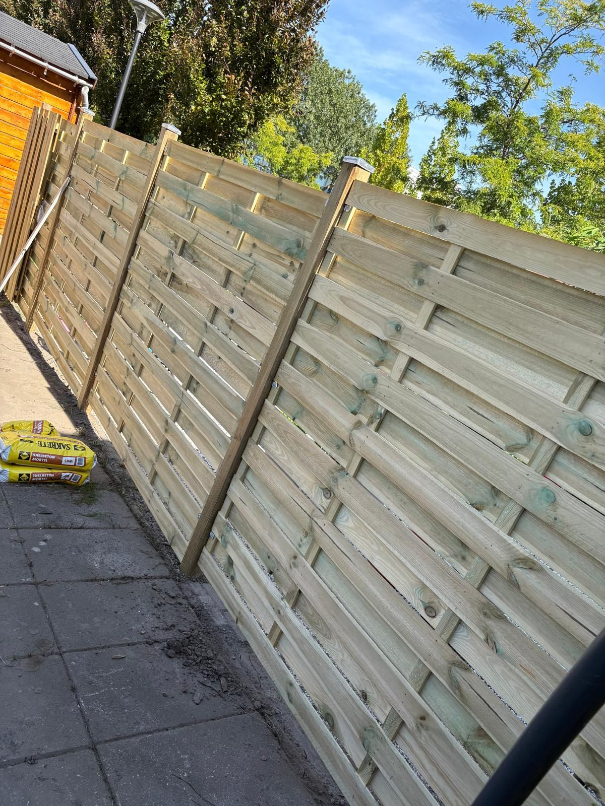

Schuttingen
Meer privacy en een mooie uitstraling, netjes geplaatst door Sealcleaning in Dordrecht en omgeving.
Impressiebeeld, geen opgeleverd project
- Persoonlijk advies
- Keuze uit diverse stijlen
- Professionele plaatsing
- Duidelijke offerte
Onze schuttingen
Kies de stijl die bij uw tuin past. Laat je inspireren door verschillende stijlen en afwerkingen. Wij bespreken samen de mogelijkheden en stemmen de definitieve materialen vooraf met je af.


Ontwerp uw schutting in 3DVraag een offerte aan
Impressiebeelden: voorbeelden van mogelijke uitvoeringen, geen opgeleverde projecten van Sealcleaning en geen gegarandeerde exacte producten. Houtsoort (bijvoorbeeld grenen of douglas), afmetingen en afwerking bevestigen we vooraf met u.
Wat houdt schuttingen in?
Bij het plaatsen van een schutting worden palen stevig verankerd en de schermen waterpas bevestigd. Bij vervanging verwijderen we eerst de oude schutting en ruimen we deze netjes af, voordat de nieuwe wordt geplaatst.
Voor wie is dit bedoeld?
Voor huiseigenaren die privacy in hun tuin willen, een verouderde of beschadigde schutting willen vervangen, of een erfafscheiding met de buren opnieuw willen inrichten.
Welke problemen lost dit op?
- Een verrotte of scheve schutting die aan vervanging toe is.
- Onvoldoende privacy in de tuin.
- Een erfafscheiding die ontbreekt of niet compleet is.
Welke werkzaamheden kunnen we uitvoeren?
- Verwijderen en afvoeren van een oude schutting
- Plaatsen van palen, inclusief verankering
- Monteren van schuttingschermen (hout, composiet of ander materiaal)
- Afwerking rondom de border
Kies uw aanpak
Advies en plaatsing
Wij adviseren over materiaal, hoogte en aantallen; het materiaal kan in onze offerte worden opgenomen, los of samen met de plaatsing. Wij plaatsen de schutting en kunnen de oude schutting verwijderen.
Alleen plaatsing van eigen materiaal
Heeft u het materiaal al gekozen of gekocht? Na overleg plaatsen wij dat. Wij controleren vooraf aantallen en geschiktheid; gebreken of tekorten in aangeleverd materiaal vallen buiten onze verantwoordelijkheid.
Herstel of vervangen
Losse palen, scheve schermen of een kapotte poort: we beoordelen eerst of herstel zinvol is voordat we vervanging adviseren.
Wat staat er in uw offerte — en wat niet standaard?
Altijd benoemd in de offerte
- Per onderdeel de hoeveelheid, het materiaal en de eenheid (m², m¹, stuks)
- Arbeid in uren, tegen het vaste uurtarief van € 60,00 excl. btw per medewerker
- Of afvoer, voorbereiding en grondwerk wel of niet zijn inbegrepen
- Welke posten nog een stelpost of 'op aanvraag' zijn, en waarom
- Wat u zelf voorbereidt, zodat er achteraf geen verrassingen zijn
Niet standaard inbegrepen
- Vergunningen en leges (waar nodig regelt u die, of spreken we dit vooraf apart af)
- Elektra-aansluitingen: die laat u door een erkend installateur maken
- Verwijderen van onvoorziene obstakels in de grond (puin, oude funderingen, wortels)
- Werk aan kabels en leidingen, en herstel van schade door verborgen gebreken
- Afvoer van grond of groenafval als dat niet uitdrukkelijk in de offerte staat
De offerte is leidend: daarin staat per onderdeel precies wat wel en niet is inbegrepen. Twijfelt u? Vraag het ons vóór u akkoord geeft.
Hoe verloopt een opdracht?
Opname ter plaatse
We meten de lengte op en bespreken het gewenste materiaal en de hoogte.
Offerte
U ontvangt een heldere offerte voor plaatsing of vervanging.
Plaatsing
We plaatsen de schutting stevig en waterpas, en ruimen oude materialen af.
Welke factoren bepalen de prijs?
De prijs van schuttingen hangt onder meer af van:
- De lengte van de schutting
- Het gekozen materiaal (hout, composiet, metaal)
- Verwijdering en afvoer van een oude schutting
- De ondergrond (beton, aarde, bestrating)
Schuttingen worden geoffreerd per strekkende meter, afhankelijk van materiaal en afwerking. Het schuttingmateriaal kan in de offerte worden opgenomen, na advies over geschikte opties.
Waarom Sealcleaning?
Sealcleaning is een jong en gedreven hoveniersbedrijf uit Dordrecht, ondersteund door vakmensen met jarenlange praktijkervaring. We werken met korte lijnen: u spreekt rechtstreeks met wie het werk uitvoert, en maken vooraf duidelijke afspraken over werkzaamheden en materialen.
Meer over onsUit de praktijk
Relevante projecten

Veelgestelde vragen
Vragen over schuttingen
Wie kiest het materiaal van de schutting?
U kiest het gewenste materiaal; wij adviseren over geschikte opties en hoeveelheden.
Voeren jullie de oude schutting af?
Ja, het verwijderen en afvoeren van de oude schutting maakt onderdeel uit van de opdracht.
Hoe stevig worden de palen verankerd?
De palen worden stevig ingegraven en verankerd, afgestemd op de hoogte en het materiaal van de schutting.
Liever advies op maat?
Wij denken met u mee over stijl, hoogte en materiaal, en bespreken de mogelijkheden bij u in de tuin.